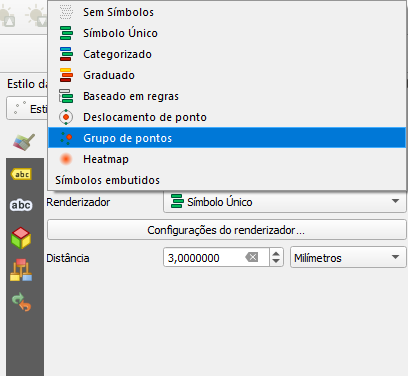

QGIS
Funções/propriedades/ajudas úteis para QGIS
Estilo grupo - tipo Leaflet.markercluster
Este exemplo foi inspirado no Leaflet.markercluster
Nos estilos da camada selecionar o Grupo de pontos

Duplicar o Marcador simples e abrir o editor de expressões
No primeiro (superior) Marcador simples colocar a expressão:
CASE
WHEN @cluster_size > 12 THEN '253,156,115,153' -- cluster-large (laranja)
WHEN @cluster_size > 6 THEN '240,194,12,153' -- cluster-medium (amarelo)
ELSE '110,204,057,153' -- cluster-small (verde)
END

No segundo (inferior) Marcador simples colocar a expressão:
CASE
WHEN @cluster_size > 12 THEN '253,156,115,153' -- cluster-large (laranja)
WHEN @cluster_size > 6 THEN '241,211,87,153' -- cluster-medium (amarelo)
ELSE '181,226,140,153' -- cluster-small (verde)
END